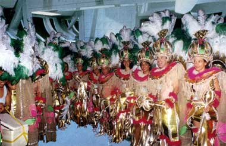

|

|
Gandaia
estelar: |

Todo oficial da Frota Estelar tambm filho de Deus (seja qual for a sua religio!). Por isso, nada como aproveitar o carnaval para ter o melhor dos dois mundos e fazer uma pausa entre um conflito com os Borgs e outro com o Dominion. Confira grandes dicas de como passar seu carnaval em grande estilo, nos principais recantos da galxia conhecida!
1. A melhor opo para o carnaval, sem duvida, a regio de Bajor. Em poucos parsecs, voc pode encontrar opes para todos os gostos. Vamos descrever abaixo as principais:
- O Quarks, na estao Deep Space Nine, organiza seu j tradicional baile de mscaras, aberto a todos os aliengenas da regio. A entrada custa uma barra de ouro pra-latinum, e o uso de fantasia obrigatrio. Sugere-se que mulheres no se fantasiem de Ferengis, pois sero obrigadas a permanecer nuas. Haver uma banda musical ao vivo, e um show ao estilo de Carmem Miranda.
- Para algo mais extico, tente uma entrada para o baile de carnaval a bordo da Defiant. A nave permanecer as cinco noites dentro da Fenda Espacial, e o show de luzes a bordo ser espetacular. O acesso no ser permitido a Bajorianos, que podem achar a festa ofensiva para sua religio.
- O imprio Cardassiano, ainda sob a tutela dos Dominion, concordou em estabelecer uma trgua de cinco dias, durante a qual realizaro uma grande festa em Cardssia Prime. A inteno seguir risca a expresso "changeling", e todos realizarem suas fantasias. O festejo pode sofrer um boicote dos militares, que temem que seus soldados soltem a franga e no voltem a seus postos.
- Para os que preferem paz e sossego, os monastrios de Bajor esto organizando sesses de retiro espiritual. Segundo kai Winn, festejar o carnaval pode despertar a fria dos Pagh Wraiths, assim, se voc segue a religio Bajoriana, melhor evitar a folia!
2. Um problema pode estragar a folia no quadrante Delta, a bordo da USS Voyager. Rumores do conta de que a tripulao se recusa a participar do baile principal, organizando diversos eventos paralelos. Nossos informantes no puderam nos explicar as razes deste boicote, pois o evento principal tinha tudo para ser um sucesso, com msica ao vivo liderada pela bela voz da capit Janeway...
3. E na nave capitnia da Federao, dois eventos disputam a ateno dos tripulantes. O primeiro, organizado pelo capito Picard, contar com cinco noites ao som de mambo. O capito em pessoa pretende liderar grupos de dana. A festana acontece no bar panormico. Enquanto isso, no Holodeck 3, o comandante Riker organiza uma festa ao som de Dixieland. Entrevistado por nossos reprteres, Riker diz que, apesar da msica pouco ortodoxa para a folia, conta com o sucesso de seu baile. "As mulheres preferiro vir minha festa a ir no baile de um capito idoso e careca", afirmou.
4. O Imprio Klingon organiza seu 15.961.616 Campeonato dos Campees. O evento aberto a qualquer guerreiro, e todos os estilos de luta e armas so permitidos. A embaixada Klingon anunciou que espera cerca de 1.500 mortos no torneio. Segundo o embaixador, "para os Klingons, o Carnaval uma boa semana para morrer!" Para os mais pacficos, haver um festival de pera em Qo'noS, e, ao mesmo tempo, um festival de obras de Shakespeare, onde, segundo o embaixador Klingon, voc ter "a oportunidade nica de ver Shakespeare no idioma original".
5. Em Vulcano, os homens que neste perodo esto entrando no Pon Farr organizam o Baile dos Solteiros. O objetivo encontrar uma esposa antes que seus hormnios os deixem loucos, ou pelo menos aliviar a tenso com algum durante a folia. uma boa pedida para mulheres que sentem atrao pelos Vulcanos. Os outros 99% da populao Vulcana devem passar a folia em retiros espirituais.
6. E, finalmente, Q convida a todos para sua grande folia de Carnaval. Os folies mais animados podem ganhar o direito de realizar seu maior desejo. Porm, Q deixa claro desde j que folies briguentos sero enviados a uma dimenso paralela, onde sero torturados por uma raa conhecida como "Shadows".
Enquete: onde voc vai passar seu carnaval?
Comissrio Odo: "No ltimo ms, no consegui capturar um Andoriano que trapaceava no Dabo, alm de roubar todo o caixa do Quark. Como fiquei com uma dvida com Quark, ele me convenceu a participar de seu baile de carnaval. Me transfomarei em Carmem Miranda e animarei a festa. Acho que esta uma boa poca para estudar o comportamento dos slidos."
Major Kira Nerys: "Eu pretendia ir para um encontro dos antigos guerrilheiros do Shakaar em Bajor. muito divertido, ns nos embriagamos e treinamos tiro ao alvo em bonecos com feies que lembram a de gul Dukat... mas Odo est bastante inseguro com sua atuao como Carmem Miranda no bar do Quark, ento, ficarei por aqui para apoi-lo."
Capito James T. Kirk: "Fui convidado para ser Rei Momo nas festas de Cestus III. No entendi muito bem o motivo, deve ser uma homenagem, afinal, meu porte atltico no combina com o de um rei Momo..."
Chefe Miles OBrien: "Eu e meu amigo Julian vamos festejar em uma holo-sute, com um programa que reproduz os antigos carnavais do Rio de Janeiro, no sculo 20. Vamos assistir a desfiles de escola de samba, e, para fechar com chave de ouro, vamos a um baile, um tal de "Scala Gay". Vai ser inesquecvel!!!"
Comandante Pavel Chekov: "Em Moscou, claro. Como todos sabem, o carnaval uma inveno russa."
Seven of Nine: "Festejar Intil. Passarei as noites em minha unidade de regenerao."
Capito Benjamin Sisko: "Perdi uma aposta para meu filho Jake e, sem outra escolha, serei uma das coristas no show que o Odo vai dar no baile de Quark... espero que os Profetas no me vejam!"
Gul Dukat: "Consegui um salvo conduto, e vou para Deep Space Nine. No perderei a chance de ver Sisko travestido por nada deste mundo!"
Tenente Uhura: "Como fiz nos ltimos 25 anos, vou para Antares, participar de um show de strip-tease."
Comandante Montgomery Scott: "Est louco? claro que vou com Uhura para Antares!!!"
Capito Spock: "O carnaval claramente um passatempo ilgico criado por humanos e difundido pela galxia. Todos se excedem e bebem demais e se cansam demais. A Federao fica em marcha lenta por cerca de um ms aps a folia. Porm, como estou entrando no Pon Farr, devo ir a Vulcano. Espero encontrar uma velha amiga, a tenente Saavik... Sabe como , minha primeira vez nesta minha segunda vida foi com ela..."